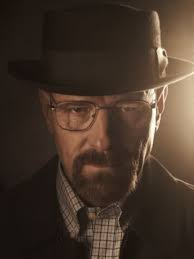

Walter White era hijo único. Cuando tenía seis años, perdió a su padre por la enfermedad de Huntington. Walter estudió en un Instituto de Tecnología de California, donde destacó por ser un brillante químico. En 1985 colaboró en un proyecto de radiografía de protones que fue galardonado con un Premio Nobel.[13][14] Tras finalizar los estudios, él y su gran amigo Elliott Schwartz, fundaron la empresa Gray Matter Technologies.[15] Durante aquella época, Walter tenía una relación con Gretchen (Jessica Hecht), su ayudante de laboratorio. Sin embargo, un día rompe con ella y abandona súbitamente la empresa, vendiendo a Elliott todas sus acciones en la empresa por tan solo 5000 dólares.[14][16] Gretchen y Elliott se casan más adelante y se vuelven multimillonarios, gracias en su mayor parte al trabajo de investigación de Walt.[16][17] A pesar de seguir siendo amigos, Walt siente un profundo y secreto resentimiento hacia Elliott y Gretchen por aprovecharse de su trabajo.[17][18] Con 50 años, Walt trabaja como profesor de química en un instituto en Albuquerque, Nuevo México, enseñando a estudiantes poco respetuosos y nada motivados.[13][19] El trabajo está tan mal pagado que Walt se ve obligado a tomar un segundo empleo en un lavadero de coches para tener ingresos adicionales, lo que resulta particularmente humillante cuando se ve en la tesitura de tener que lavarle el coche a sus propios estudiantes.[20] Walt y su mujer Skyler (Anna Gunn) tienen un hijo adolescente llamado Walter Jr. (RJ Mitte), que sufre de parálisis cerebral. Skyler además está embarazada de su segunda hija, Holly, que nace al final de la segunda temporada.[21] Walt tiene otros familiares como la hermana de Skyler, Marie Schrader (Betsy Brandt); su marido, Hank (Dean Norris), que es un agente de la DEA (siglas en inglés de Administración para el Control de Drogas); y su madre, a la que nunca se la ve físicamente. A lo largo de la serie, la personalidad de Walter evoluciona. Por ejemplo, en un principio tiene problemas consigo mismo de matar a un "cabo suelto", mientras que en temporadas posteriores no se hace problemas con ello.